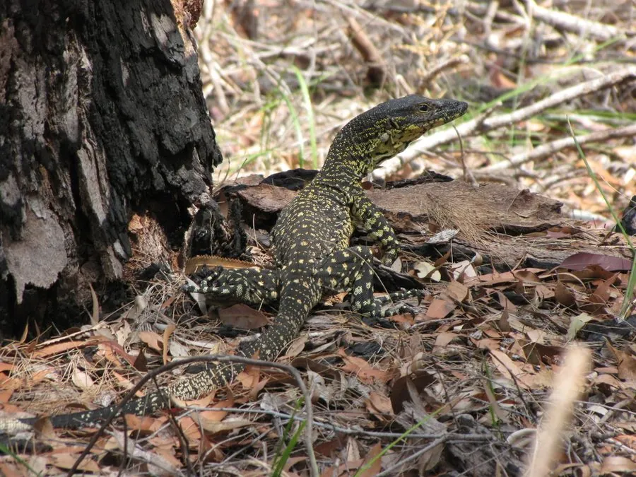

爬行动物 · 动物界
树巨蜥 Varanus varius

澳大利亚东南部的大型巨蜥，体表有花边状斑纹，善于攀爬树木，常在树上寻找鸟巢和腐肉，是澳洲第二大巨蜥。
- 分类
- 门脊索动物门纲爬行纲目有鳞目科巨蜥科属巨蜥属
- 栖息环境
- 澳大利亚东南部的森林、灌丛、海岸林地与树冠层
- 地理分布
- 澳大利亚东南部及东部沿海地区
- 保护级别
- IUCN 无危（LC）；CITES 附录 II；非中国原产
物种志
树巨蜥体长 1.5–2 米，个别可达 2.4 米，身体粗壮，尾部侧扁而长，四肢有力，趾端有锐爪；体色以灰褐或暗褐色为底，身上布满黄色或白色的斑点与横纹，形成花边状的复杂花纹，“花边巨蜥”之名由此而来。它是澳大利亚第二大的巨蜥。
它分布于澳大利亚东南部的森林、灌丛和海岸林地，善于攀爬树木，常在树冠层活动，也会下到地面觅食，捕食昆虫、鸟类、鸟蛋、蜥蜴、小型哺乳动物和腐肉。它是卵生蜥蜴，雌蜥多在白蚁丘中产卵 4–15 枚，借白蚁丘的温度孵化，孵化期约 6–8 个月。树巨蜥没有毒性，但体型大、爪牙锋利，受惊时可能用尾巴抽打，遇到时应保持距离；目前它被列为无危物种。
形态与习性
- 食性昆虫、鸟类、鸟蛋、蜥蜴、小型哺乳动物和腐肉
- 体长1.5–2 m，最长约 2.4 m
- 寿命约 10–20 年
- 繁殖卵生，4–15 枚，多产于白蚁丘中
- 活动节律昼行性，善攀爬
- 防御无毒性，但爪牙锋利，尾可抽打
趣味知识
- 树巨蜥身上的花边状斑纹，让它在澳大利亚巨蜥中十分醒目。
- 它善于爬树，常在树冠层搜寻鸟巢和鸟蛋。
- 雌蜥常把卵产在白蚁丘中，借助蚁丘的温度孵化。